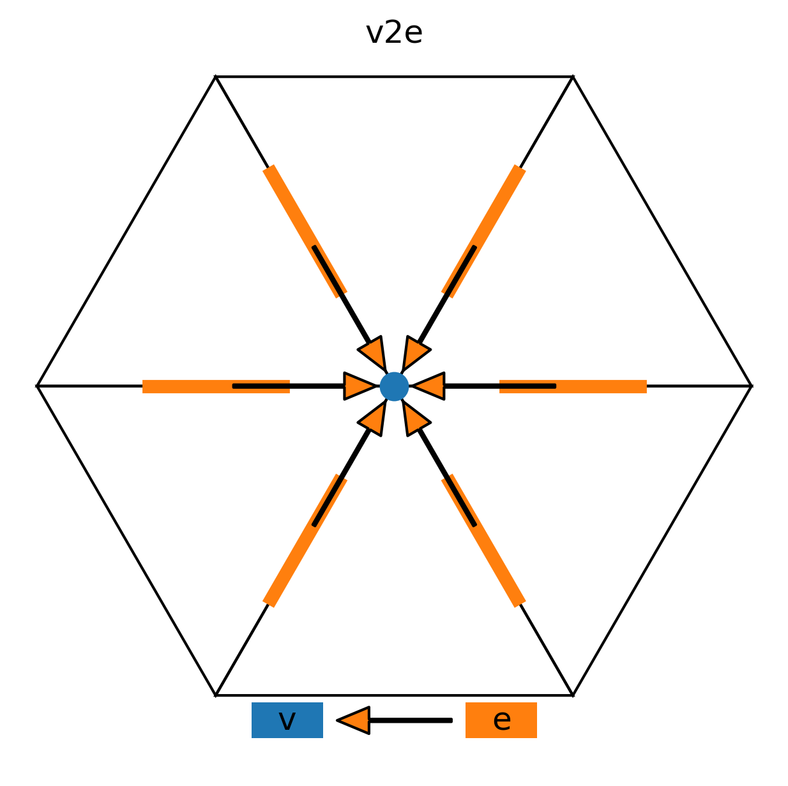
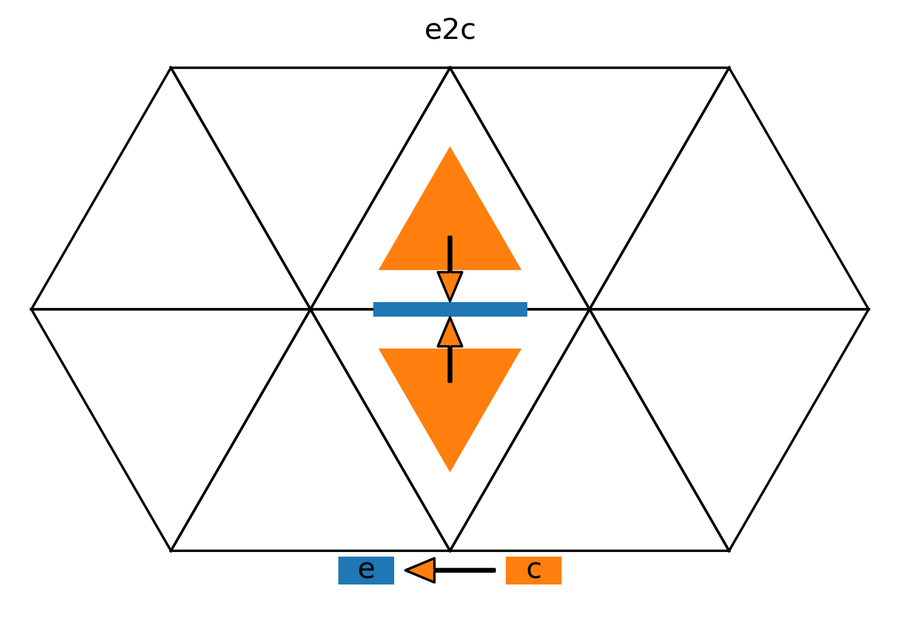

Description of symbols
This page explains some of the symbols used in the numerical documentation.
\(\sum_\offProv{v2e}\)
This symbol is used to indicate summation over a set of points. The offset provider (\(\offProv{v2e}\)) is read left to right, however the data itself “moves” from right to left (as in the figure). In this example the source points are the six (orange) edges adjacent to the destination (blue) vertex.
The corresponding code, computing the vorticity as rotor of velocity in this example, is:
rot_vec = neighbor_sum(vec_e(V2E) * geofac_rot, axis=V2EDim)
\(\Gradn_{\offProv{e2c}}\)
This symbol is used to indicate the difference (horizontal gradient) between two points. The offset provider (\(\offProv{e2c}\)) is read left to right, however the data itself “moves” from right to left (as in the figure). In this example source points are the two (orange) cells adjacent to the destination (blue) edge.
The corresponding code, computing the horizontal gradient in the normal direction of the exner function in this example, is:
gradh_exner = inv_dual_edge_length * ( z_exner_ex_pr(E2C[1]) - z_exner_ex_pr(E2C[0]) )
\(\nlev\)
Number of (full) vertical levels.
\(\nflatlev\)
Number of flat vertical levels, located above the terrain-following levels.
\(\nflatgradp\)
Maximum height index at which an edge center lies within two neighboring cells.